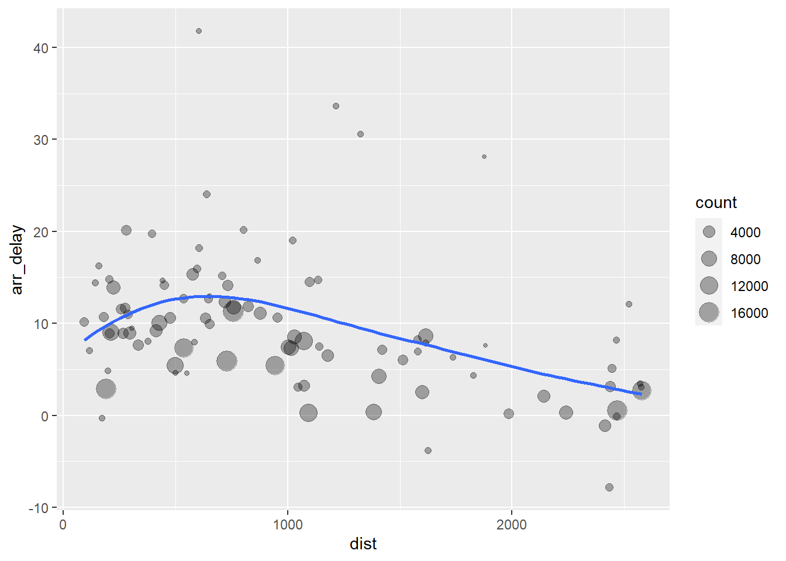

Chapter 6 Data transformation
可视化是生成可以直接观察的数据展示形式的重要工具，但我们却很少能以所需的正确形式获取数据。因此，我们通常需要创建一些新的变量或摘要，或是纯粹地只想重命名变量或对观测值重新排序。
library(nycflights13)
library(tidyverse)6.1 查看 flights 数据集
在后面的案例中，我们将持续关注来自 nycflights13 的数据集 flights。 它包含 2013 年从纽约市出发的共 336,776 个航班。
flights
#> # A tibble: 336,776 x 19
#> year month day dep_time sched_dep_time dep_delay arr_time sched_arr_time
#> <int> <int> <int> <int> <int> <dbl> <int> <int>
#> 1 2013 1 1 517 515 2 830 819
#> 2 2013 1 1 533 529 4 850 830
#> 3 2013 1 1 542 540 2 923 850
#> 4 2013 1 1 544 545 -1 1004 1022
#> 5 2013 1 1 554 600 -6 812 837
#> 6 2013 1 1 554 558 -4 740 728
#> 7 2013 1 1 555 600 -5 913 854
#> 8 2013 1 1 557 600 -3 709 723
#> 9 2013 1 1 557 600 -3 838 846
#> 10 2013 1 1 558 600 -2 753 745
#> # ... with 336,766 more rows, and 11 more variables: arr_delay <dbl>,
#> # carrier <chr>, flight <int>, tailnum <chr>, origin <chr>, dest <chr>,
#> # air_time <dbl>, distance <dbl>, hour <dbl>, minute <dbl>, time_hour <dttm>列名称下字母缩写代表该列的数据类型： - int：整数 - dbl：双精度或实数 - chr：字符向量或字符串 - dttm：日期时间（日期 + 时间） 此外还有： - lgl：仅包含逻辑词（TRUE / FALSE） - fctr：因子（factor），表示具有固定可能值的分类变量 - date：日期
tidyverse 还附带了一些神奇的功能，如 filter、arrange、select、rename、mutate 和 summarise 等。下面我们将逐个学习它们。
6.2 过滤 filter()
# 筛选月份为 1，天数为 1 的
filter(flights, month == 1, day == 1)
#> # A tibble: 842 x 19
#> year month day dep_time sched_dep_time dep_delay arr_time sched_arr_time
#> <int> <int> <int> <int> <int> <dbl> <int> <int>
#> 1 2013 1 1 517 515 2 830 819
#> 2 2013 1 1 533 529 4 850 830
#> 3 2013 1 1 542 540 2 923 850
#> 4 2013 1 1 544 545 -1 1004 1022
#> 5 2013 1 1 554 600 -6 812 837
#> 6 2013 1 1 554 558 -4 740 728
#> 7 2013 1 1 555 600 -5 913 854
#> 8 2013 1 1 557 600 -3 709 723
#> 9 2013 1 1 557 600 -3 838 846
#> 10 2013 1 1 558 600 -2 753 745
#> # ... with 832 more rows, and 11 more variables: arr_delay <dbl>,
#> # carrier <chr>, flight <int>, tailnum <chr>, origin <chr>, dest <chr>,
#> # air_time <dbl>, distance <dbl>, hour <dbl>, minute <dbl>, time_hour <dttm>
# 筛选月份为 12 或者天数为 25 的（圣诞节）
filter(flights, month == 12 & day == 25)
#> # A tibble: 719 x 19
#> year month day dep_time sched_dep_time dep_delay arr_time sched_arr_time
#> <int> <int> <int> <int> <int> <dbl> <int> <int>
#> 1 2013 12 25 456 500 -4 649 651
#> 2 2013 12 25 524 515 9 805 814
#> 3 2013 12 25 542 540 2 832 850
#> 4 2013 12 25 546 550 -4 1022 1027
#> 5 2013 12 25 556 600 -4 730 745
#> 6 2013 12 25 557 600 -3 743 752
#> 7 2013 12 25 557 600 -3 818 831
#> 8 2013 12 25 559 600 -1 855 856
#> 9 2013 12 25 559 600 -1 849 855
#> 10 2013 12 25 600 600 0 850 846
#> # ... with 709 more rows, and 11 more variables: arr_delay <dbl>,
#> # carrier <chr>, flight <int>, tailnum <chr>, origin <chr>, dest <chr>,
#> # air_time <dbl>, distance <dbl>, hour <dbl>, minute <dbl>, time_hour <dttm>
# 筛选出月份为12，天数为 11 或者 12 的
filter(flights, month == 12, day == 11 | day == 12)
#> # A tibble: 1,922 x 19
#> year month day dep_time sched_dep_time dep_delay arr_time sched_arr_time
#> <int> <int> <int> <int> <int> <dbl> <int> <int>
#> 1 2013 12 11 459 500 -1 651 651
#> 2 2013 12 11 517 515 2 825 814
#> 3 2013 12 11 542 545 -3 841 832
#> 4 2013 12 11 544 540 4 838 850
#> 5 2013 12 11 544 550 -6 1021 1027
#> 6 2013 12 11 552 600 -8 927 915
#> 7 2013 12 11 552 600 -8 712 717
#> 8 2013 12 11 553 600 -7 644 701
#> 9 2013 12 11 554 600 -6 753 755
#> 10 2013 12 11 554 600 -6 656 659
#> # ... with 1,912 more rows, and 11 more variables: arr_delay <dbl>,
#> # carrier <chr>, flight <int>, tailnum <chr>, origin <chr>, dest <chr>,
#> # air_time <dbl>, distance <dbl>, hour <dbl>, minute <dbl>, time_hour <dttm>
# 筛选出月份为12，天数为 10 或者 11 或者 12 的
filter(flights, month == 12, day %in% c(10, 11, 12)) # 注意 “包含于” 表示的方法
#> # A tibble: 2,865 x 19
#> year month day dep_time sched_dep_time dep_delay arr_time sched_arr_time
#> <int> <int> <int> <int> <int> <dbl> <int> <int>
#> 1 2013 12 10 7 2359 8 451 445
#> 2 2013 12 10 7 2359 8 446 437
#> 3 2013 12 10 11 2245 86 119 2353
#> 4 2013 12 10 211 2359 132 651 440
#> 5 2013 12 10 457 500 -3 701 651
#> 6 2013 12 10 528 515 13 830 814
#> 7 2013 12 10 543 545 -2 907 832
#> 8 2013 12 10 548 550 -2 1022 1027
#> 9 2013 12 10 549 540 9 854 850
#> 10 2013 12 10 551 600 -9 920 856
#> # ... with 2,855 more rows, and 11 more variables: arr_delay <dbl>,
#> # carrier <chr>, flight <int>, tailnum <chr>, origin <chr>, dest <chr>,
#> # air_time <dbl>, distance <dbl>, hour <dbl>, minute <dbl>, time_hour <dttm>
# 添加函数参数 na.rm = TRUE 来剔除数据，is.na 来判断是否为 NA（这是通用的）
filter(flights, month == 1, na.rm = TRUE)
#> # A tibble: 27,004 x 19
#> year month day dep_time sched_dep_time dep_delay arr_time sched_arr_time
#> <int> <int> <int> <int> <int> <dbl> <int> <int>
#> 1 2013 1 1 517 515 2 830 819
#> 2 2013 1 1 533 529 4 850 830
#> 3 2013 1 1 542 540 2 923 850
#> 4 2013 1 1 544 545 -1 1004 1022
#> 5 2013 1 1 554 600 -6 812 837
#> 6 2013 1 1 554 558 -4 740 728
#> 7 2013 1 1 555 600 -5 913 854
#> 8 2013 1 1 557 600 -3 709 723
#> 9 2013 1 1 557 600 -3 838 846
#> 10 2013 1 1 558 600 -2 753 745
#> # ... with 26,994 more rows, and 11 more variables: arr_delay <dbl>,
#> # carrier <chr>, flight <int>, tailnum <chr>, origin <chr>, dest <chr>,
#> # air_time <dbl>, distance <dbl>, hour <dbl>, minute <dbl>, time_hour <dttm>6.2.1 比较
对于比较大小，我们有 >、>=、<、<=、!= 和 ==。注意这里的等于用了两个等于符号表示（这与很多语言保持一致）。如果写成了一个，R 通常会 “机智地” 提醒你：
filter(flights, month = 1)
#> Error in `filter()`:
#> ! We detected a named input.
#> i This usually means that you've used `=` instead of `==`.
#> i Did you mean `month == 1`?
#> Backtrace:
#> 1. dplyr::filter(flights, month = 1)
#> 2. dplyr:::filter.data.frame(flights, month = 1)注意：在比较数据时你可能会遇到浮点数，导致结果可能不符合常理：
sqrt(2)^2 == 2
#> [1] FALSE
1 / 49 * 49 == 1
#> [1] FALSE请使用 near() 函数解决这个问题：
near(sqrt(2)^2, 2)
#> [1] TRUE
near(1 / 49 * 49, 1)
#> [1] TRUE6.2.3 缺失值
R 在数据缺失时会用 NA 表示。但注意它并不是单纯地表示 0。小心在比较时它会传染！
NA > 5
#> [1] NA
10 == NA
#> [1] NA
NA + 10
#> [1] NA
NA / 2
#> [1] NA
NA == NA
#> [1] NA我们需要人性地代入进去看待这个问题。这里有个很好的范例：
# Let x be Mary's age. We don't know how old she is.
x <- NA
# Let y be John's age. We don't know how old he is.
y <- NA
# Are John and Mary the same age?
x == y
#> [1] NA
# We don't know!6.3 排列 arange()
# 按照年月日排序
arrange(flights, year, month, day)
#> # A tibble: 336,776 x 19
#> year month day dep_time sched_dep_time dep_delay arr_time sched_arr_time
#> <int> <int> <int> <int> <int> <dbl> <int> <int>
#> 1 2013 1 1 517 515 2 830 819
#> 2 2013 1 1 533 529 4 850 830
#> 3 2013 1 1 542 540 2 923 850
#> 4 2013 1 1 544 545 -1 1004 1022
#> 5 2013 1 1 554 600 -6 812 837
#> 6 2013 1 1 554 558 -4 740 728
#> 7 2013 1 1 555 600 -5 913 854
#> 8 2013 1 1 557 600 -3 709 723
#> 9 2013 1 1 557 600 -3 838 846
#> 10 2013 1 1 558 600 -2 753 745
#> # ... with 336,766 more rows, and 11 more variables: arr_delay <dbl>,
#> # carrier <chr>, flight <int>, tailnum <chr>, origin <chr>, dest <chr>,
#> # air_time <dbl>, distance <dbl>, hour <dbl>, minute <dbl>, time_hour <dttm>
# 反向排序。注意无论正反向，NA 值都总是被排到末尾：
arrange(flights, desc(dep_delay))
#> # A tibble: 336,776 x 19
#> year month day dep_time sched_dep_time dep_delay arr_time sched_arr_time
#> <int> <int> <int> <int> <int> <dbl> <int> <int>
#> 1 2013 1 9 641 900 1301 1242 1530
#> 2 2013 6 15 1432 1935 1137 1607 2120
#> 3 2013 1 10 1121 1635 1126 1239 1810
#> 4 2013 9 20 1139 1845 1014 1457 2210
#> 5 2013 7 22 845 1600 1005 1044 1815
#> 6 2013 4 10 1100 1900 960 1342 2211
#> 7 2013 3 17 2321 810 911 135 1020
#> 8 2013 6 27 959 1900 899 1236 2226
#> 9 2013 7 22 2257 759 898 121 1026
#> 10 2013 12 5 756 1700 896 1058 2020
#> # ... with 336,766 more rows, and 11 more variables: arr_delay <dbl>,
#> # carrier <chr>, flight <int>, tailnum <chr>, origin <chr>, dest <chr>,
#> # air_time <dbl>, distance <dbl>, hour <dbl>, minute <dbl>, time_hour <dttm>6.4 选择 select()
注意一些方便的匹配规则：
starts_with("abc")：匹配以 “abc” 开头的名称。ends_with("xyz")：匹配以 “xyz” 结尾的名称。contains("ijk")：匹配包含 “ijk” 的名称。matches("(.)\\1")：选择与正则表达式匹配的变量。num_range("x", 1:3)：匹配 x1、x2和 x3。
# 选出年月日
select(flights, year, month, day)
#> # A tibble: 336,776 x 3
#> year month day
#> <int> <int> <int>
#> 1 2013 1 1
#> 2 2013 1 1
#> 3 2013 1 1
#> 4 2013 1 1
#> 5 2013 1 1
#> 6 2013 1 1
#> 7 2013 1 1
#> 8 2013 1 1
#> 9 2013 1 1
#> 10 2013 1 1
#> # ... with 336,766 more rows
select(flights, year:day)
#> # A tibble: 336,776 x 3
#> year month day
#> <int> <int> <int>
#> 1 2013 1 1
#> 2 2013 1 1
#> 3 2013 1 1
#> 4 2013 1 1
#> 5 2013 1 1
#> 6 2013 1 1
#> 7 2013 1 1
#> 8 2013 1 1
#> 9 2013 1 1
#> 10 2013 1 1
#> # ... with 336,766 more rows
# 选出除年月日以及 flight 的所有列
select(flights, -c(year:day, flight)) # 有时 c 可以省略掉
#> # A tibble: 336,776 x 15
#> dep_time sched_dep_time dep_delay arr_time sched_arr_time arr_delay carrier
#> <int> <int> <dbl> <int> <int> <dbl> <chr>
#> 1 517 515 2 830 819 11 UA
#> 2 533 529 4 850 830 20 UA
#> 3 542 540 2 923 850 33 AA
#> 4 544 545 -1 1004 1022 -18 B6
#> 5 554 600 -6 812 837 -25 DL
#> 6 554 558 -4 740 728 12 UA
#> 7 555 600 -5 913 854 19 B6
#> 8 557 600 -3 709 723 -14 EV
#> 9 557 600 -3 838 846 -8 B6
#> 10 558 600 -2 753 745 8 AA
#> # ... with 336,766 more rows, and 8 more variables: tailnum <chr>,
#> # origin <chr>, dest <chr>, air_time <dbl>, distance <dbl>, hour <dbl>,
#> # minute <dbl>, time_hour <dttm>
# 选出结尾为 delay 相关的列
select(flights, ends_with("delay"))
#> # A tibble: 336,776 x 2
#> dep_delay arr_delay
#> <dbl> <dbl>
#> 1 2 11
#> 2 4 20
#> 3 2 33
#> 4 -1 -18
#> 5 -6 -25
#> 6 -4 12
#> 7 -5 19
#> 8 -3 -14
#> 9 -3 -8
#> 10 -2 8
#> # ... with 336,766 more rows
# 选出开头为 sched 相关的列
select(flights, starts_with("sched"))
#> # A tibble: 336,776 x 2
#> sched_dep_time sched_arr_time
#> <int> <int>
#> 1 515 819
#> 2 529 830
#> 3 540 850
#> 4 545 1022
#> 5 600 837
#> 6 558 728
#> 7 600 854
#> 8 600 723
#> 9 600 846
#> 10 600 745
#> # ... with 336,766 more rows
# 选出包含 sched 相关的列
select(flights, contains("sched"))
#> # A tibble: 336,776 x 2
#> sched_dep_time sched_arr_time
#> <int> <int>
#> 1 515 819
#> 2 529 830
#> 3 540 850
#> 4 545 1022
#> 5 600 837
#> 6 558 728
#> 7 600 854
#> 8 600 723
#> 9 600 846
#> 10 600 745
#> # ... with 336,766 more rows
# 选出的数据不包含带 sched的列，此外其他都包含
select(flights, -contains("sched"), everything())
#> # A tibble: 336,776 x 19
#> year month day dep_time dep_delay arr_time arr_delay carrier flight
#> <int> <int> <int> <int> <dbl> <int> <dbl> <chr> <int>
#> 1 2013 1 1 517 2 830 11 UA 1545
#> 2 2013 1 1 533 4 850 20 UA 1714
#> 3 2013 1 1 542 2 923 33 AA 1141
#> 4 2013 1 1 544 -1 1004 -18 B6 725
#> 5 2013 1 1 554 -6 812 -25 DL 461
#> 6 2013 1 1 554 -4 740 12 UA 1696
#> 7 2013 1 1 555 -5 913 19 B6 507
#> 8 2013 1 1 557 -3 709 -14 EV 5708
#> 9 2013 1 1 557 -3 838 -8 B6 79
#> 10 2013 1 1 558 -2 753 8 AA 301
#> # ... with 336,766 more rows, and 10 more variables: tailnum <chr>,
#> # origin <chr>, dest <chr>, air_time <dbl>, distance <dbl>, hour <dbl>,
#> # minute <dbl>, time_hour <dttm>, sched_dep_time <int>, sched_arr_time <int>6.6 添加新变量 mutate() 与 transmute()
# 生成优化版的 flights 数据集
flights_sml <- select(flights, year:day, ends_with("delay"), distance, air_time)
mutate(
flights_sml,
gain = dep_delay - arr_delay,
speed_min = distance / air_time, # 计算出的新数据
speed_sec = speed_min * 60 # 从刚生成的数据中套新数据
)
#> # A tibble: 336,776 x 10
#> year month day dep_delay arr_delay distance air_time gain speed_min
#> <int> <int> <int> <dbl> <dbl> <dbl> <dbl> <dbl> <dbl>
#> 1 2013 1 1 2 11 1400 227 -9 6.17
#> 2 2013 1 1 4 20 1416 227 -16 6.24
#> 3 2013 1 1 2 33 1089 160 -31 6.81
#> 4 2013 1 1 -1 -18 1576 183 17 8.61
#> 5 2013 1 1 -6 -25 762 116 19 6.57
#> 6 2013 1 1 -4 12 719 150 -16 4.79
#> 7 2013 1 1 -5 19 1065 158 -24 6.74
#> 8 2013 1 1 -3 -14 229 53 11 4.32
#> 9 2013 1 1 -3 -8 944 140 5 6.74
#> 10 2013 1 1 -2 8 733 138 -10 5.31
#> # ... with 336,766 more rows, and 1 more variable: speed_sec <dbl>
# 生成数据中不包含旧数据，应该使用 transmute
transmute(
flights_sml,
gain = dep_delay - arr_delay,
speed_min = distance / air_time, # 计算出的新数据
speed_sec = speed_min * 60 # 从刚生成的数据中套新数据
)
#> # A tibble: 336,776 x 3
#> gain speed_min speed_sec
#> <dbl> <dbl> <dbl>
#> 1 -9 6.17 370.
#> 2 -16 6.24 374.
#> 3 -31 6.81 408.
#> 4 17 8.61 517.
#> 5 19 6.57 394.
#> 6 -16 4.79 288.
#> 7 -24 6.74 404.
#> 8 11 4.32 259.
#> 9 5 6.74 405.
#> 10 -10 5.31 319.
#> # ... with 336,766 more rows6.7 分组摘要 summarise()
注意关注管道符号：%>%
# x %>% f(y) 即为 f(x, y)
msleep %>%
count(order, sort = TRUE)
# 上面的等同于下面的
count(msleep, order, sort = T)注意单纯的 summarize 并没有太大的用处：
summarise(
flights,
delay = mean(dep_delay, na.rm = TRUE) # mean，取均值，na.rm 忽略空值
)
#> # A tibble: 1 x 1
#> delay
#> <dbl>
#> 1 12.6所以我们一般配合 group_by 使用：
by_day <- group_by(flights, year, month, day) # 分组细节到年月日
summarise(
by_day,
delay = mean(dep_delay, na.rm = TRUE) # 组内的 [delay] 标签追加，按照算法分组返回值
)
#> `summarise()` has grouped output by 'year', 'month'. You can override using the `.groups`
#> argument.
#> # A tibble: 365 x 4
#> # Groups: year, month [12]
#> year month day delay
#> <int> <int> <int> <dbl>
#> 1 2013 1 1 11.5
#> 2 2013 1 2 13.9
#> 3 2013 1 3 11.0
#> 4 2013 1 4 8.95
#> 5 2013 1 5 5.73
#> 6 2013 1 6 7.15
#> 7 2013 1 7 5.42
#> 8 2013 1 8 2.55
#> 9 2013 1 9 2.28
#> 10 2013 1 10 2.84
#> # ... with 355 more rows
# 使用管道符 "%>%" 精简代码
group_by(flights, year, month, day) %>%
summarise(delay = mean(dep_delay, na.rm = TRUE))
#> `summarise()` has grouped output by 'year', 'month'. You can override using the `.groups`
#> argument.
#> # A tibble: 365 x 4
#> # Groups: year, month [12]
#> year month day delay
#> <int> <int> <int> <dbl>
#> 1 2013 1 1 11.5
#> 2 2013 1 2 13.9
#> 3 2013 1 3 11.0
#> 4 2013 1 4 8.95
#> 5 2013 1 5 5.73
#> 6 2013 1 6 7.15
#> 7 2013 1 7 5.42
#> 8 2013 1 8 2.55
#> 9 2013 1 9 2.28
#> 10 2013 1 10 2.84
#> # ... with 355 more rows6.8 其他处理数据功能
- 算术运算符：+ - * /。它们可以用于向量，会自动帮你做一个 for 循环。
- 模算术：%/% 求模、 %% 求余。
- Log：log()、log2()、log10()，即求对数。这些会在未来建模时常常用到。
- 偏移量：lag() 值前导、lead() 值滞后，用于将向量的值前导或滞后。如：
(x <- 1:10)
#> [1] 1 2 3 4 5 6 7 8 9 10
lag(x)
#> [1] NA 1 2 3 4 5 6 7 8 9
lead(x)
#> [1] 2 3 4 5 6 7 8 9 10 NA- 累积和滚动聚合：cumsum() 总和、cumprod() 乘积、cummin() 最小值、cummax() 最大值、cummean() 均值。此外 dplyr 也提供累积手段。如果我们需要滚动聚合（即在滚动窗口上计算的总和），请尝试 RcppRoll 包。
(x <- (1:10))
#> [1] 1 2 3 4 5 6 7 8 9 10
cumsum(x)
#> [1] 1 3 6 10 15 21 28 36 45 55
cummean(x)
#> [1] 1.0 1.5 2.0 2.5 3.0 3.5 4.0 4.5 5.0 5.56.9 分析 flights 数据集
6.9.1 计算目的地相关的图
by_dest <- group_by(flights, dest) # 以 dest 分组
delay <- summarise(
by_dest,
count = n(), # 计算组内数据数量
dist = mean(distance, na.rm = TRUE), # 计算每组内的 distance 平均值
arr_delay = mean(arr_delay, na.rm = TRUE), # 同理，到达时间
)
# 精简得到想要的数据
delay <- filter(delay, count > 20, dest != "HNL") # 到达数大于20次，目的地不为 HNL
# 尝试画图
ggplot(
data = delay,
mapping = aes(x = dist, y = arr_delay) # 确定 data 和 mapping 的默认数据
) +
geom_point(
aes(size = count), # 添加新的特殊数据 size（此处 mapping 为默认值，可省略声明）
alpha = 1 / 3 # 透明度固定
) +
geom_smooth(se = FALSE) # 绘制平滑曲线
#> `geom_smooth()` using method = 'loess' and formula 'y ~ x'
6.9.2 获取热门目的地及有关数据
pop_dests <- group_by(flights, dest) %>%
filter(n() > 365) %>%
distinct(dest) # 筛选只要指定的列
head(pop_dests, 10) # 只展示前十
#> # A tibble: 10 x 1
#> # Groups: dest [10]
#> dest
#> <chr>
#> 1 IAH
#> 2 MIA
#> 3 BQN
#> 4 ATL
#> 5 ORD
#> 6 FLL
#> 7 IAD
#> 8 MCO
#> 9 PBI
#> 10 TPA6.9.3 绘制飞机延误时长分布图
delays <- flights %>% # 获得处理后的数据
filter(!is.na(dep_delay), !is.na(arr_delay)) %>% # 去除空 NA 数据
group_by(tailnum) %>% # 按航班分组
summarise(
# 获取平均值并产生包含 group_by 列和计算的新列
delay = mean(arr_delay, na.rm = TRUE), # 由于之前过滤过了，此处的 na.rm 可以去掉
n = n() # 统计数量，方便绘制直方图
)
delays %>%
filter(n > 25) %>% # 数量很小时往往会对数据产生较大影响。这里过滤掉它们
ggplot(mapping = aes(x = n, y = delay)) +
geom_point(alpha = 1 / 10)
6.9.4 计算每天最早和最晚的航班
flights %>%
filter(!is.na(dep_delay), !is.na(arr_delay)) %>%
group_by(year, month, day) %>%
summarise(
first = min(dep_time),
last = max(dep_time)
)
#> `summarise()` has grouped output by 'year', 'month'. You can override using the `.groups`
#> argument.
#> # A tibble: 365 x 5
#> # Groups: year, month [12]
#> year month day first last
#> <int> <int> <int> <int> <int>
#> 1 2013 1 1 517 2356
#> 2 2013 1 2 42 2354
#> 3 2013 1 3 32 2349
#> 4 2013 1 4 25 2358
#> 5 2013 1 5 14 2357
#> 6 2013 1 6 16 2355
#> 7 2013 1 7 49 2359
#> 8 2013 1 8 454 2351
#> 9 2013 1 9 2 2252
#> 10 2013 1 10 3 2320
#> # ... with 355 more rows